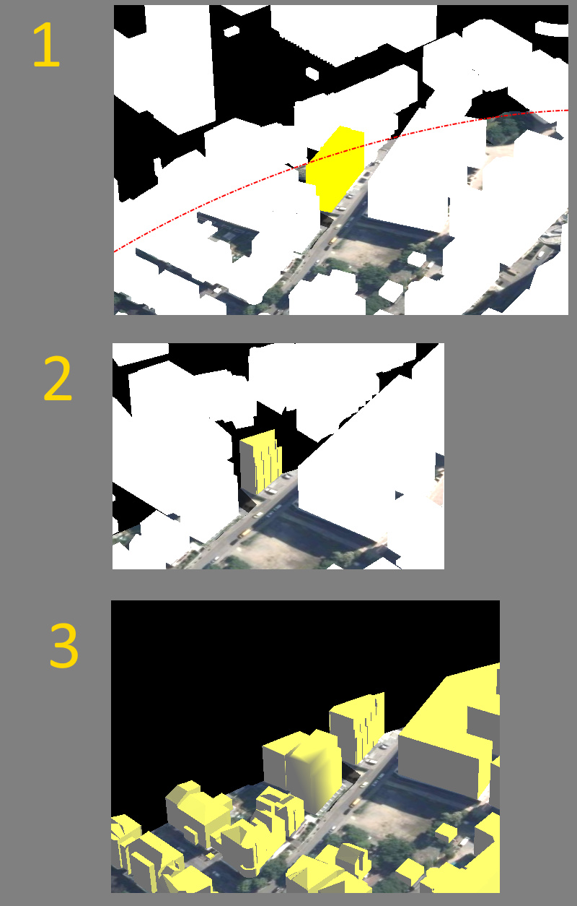

Hi there,
I’m currently writing a shader (DX11 only at the moment) that clips objects in a circular shape (which works quite well). This shader is based on
LitSolid.hlsl
. For the purpose to determine a subobject via raycast I created my model (used as StaticModel) with multiple Vertex Buffers (one per object, I used the UrhoExporter Addon for blender to achieve this). (A single node per subobject was not an option due to the resulting performance).
Since I use the model with multiple Vertex Buffers, my shader’s effects and colors and the clipping as well, only apply to the first submodel/Vertex Buffer. As I initially searched the problem in my own code I tried the same with all default settings and shaders, with a simple
model.Material = Material.FromColor(Color.Yellow);
and discovered the same issue. Only the first subobject gets properly rendered. All other objectes are just white pixels (only the silhouette without shadows or anything)
In the screenshot (1) you can see the yellow buildung is the subobject in the first vertex buffer, all others are pure white. The red dot-dashed line indicates where the objects should be cutted by the shader (this line was added manually - it is not part of the shader). This screenshot was done with the default LitSolid shader.
The following screenshot (2) uses my own shader, there you can see, the clipping and coloring works, but also only for the first object
The last screenshot (3) shows how it should look like. But this is currently only possible, if I use one vertex buffer for all buildungs together.

At the moment I am quit lost of ideas how to solve or debug this Problem. I think it is somehow necessary to tell the shader to use all/further vertex buffers as well or to combine them before they get passed to the GPU, but I have no real idea how to do this. I am also quite new to 3D development and shaders, which does not make it easier

I’m using UrhoSharp v1.8.93 in an C# UWP application.